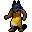

葬儀の侍祭 Burial acolyte
英語版 CrawlWiki の記事「Burial acolyte」(0.31 向け、2024-01-24 版)の翻訳です。原文の著者は編集履歴をご覧ください。
この記事は 0.31 の時点の内容で、最新の 0.34 とは違うところがあるかもしれません。
| 葬儀の侍祭 p  | |
|---|---|
| HP | 12-26 |
| HD | 4 |
| XP | 71 |
| 速度 | 10 |
| AC | 2 |
| EV | 13 |
| 意志力 | 20 |
| 攻撃1 | 4（打撃: 通常）
|
| 耐性 | なし |
| 弱点 | なし |
| 生息地 | 陸上 |
| 知能 | 人間並み |
| 使用 | 武器と防具 初期装備 扉を開ける |
| 分類 | 生物 |
| 体格 | 中くらい |
| 種類 | 人間、人間 |
| フラグ | 温血 話す 邪悪 |

| キクバークッグァに仕える仮面をつけた司祭で、死者を呼び起こす儀式と永遠の眠りにつかせる儀式の両方の詠唱に通じている。 |
基本情報
葬儀の侍祭は納骨堂で、まれに地下墓地でも見つかる。たいてい味方の派生アンデッドを連れていて、それに俊足や腕力強化をかけて強化する。悪意の供物で少しだけ回復させることもある。
呪文
小技
- 仲間のアンデッドを強化される前に倒そう。侍祭がそのアンデッドの後ろにいるなら、ジャベリンなど、貫通する攻撃や打擲型の攻撃を使うといい。
- アンデッドのプレイヤーは、近接攻撃の届く距離まで寄せつけないよう気をつけよう。そこまで近づかれるとアンデッドの解呪を受けてしまう。
- 負のエネルギーへの耐性があれば、悪意の供物のダメージを減らせる。
- 地下墓地で出会うころには、ほかの住人の大半と比べてずっともろい敵になっている。
変更履歴
- 葬儀の侍祭は 0.31 で追加された。